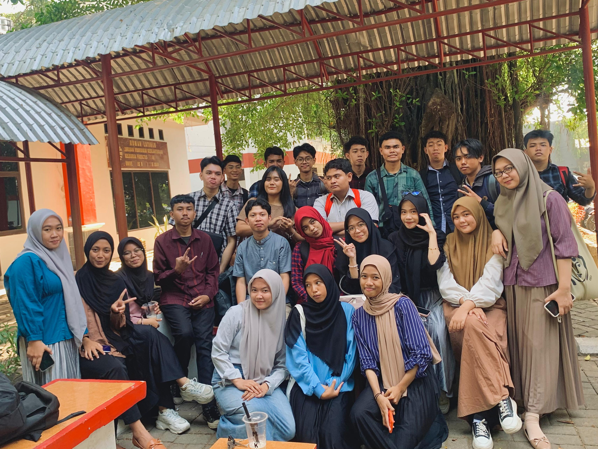

Nama : Daffa Fakhir
NIM : 230210501048
Kelas : TEKOM C
Alamat : Jalan Tinumbu Lorong 144 | Kota Makassar
Sekolah Asal SMK Negeri 7 Makassar
Universitas Negeri MakassarJangan mulai sesuatu yang tidak bisa kamu selesaikan.
Pengalaman Selama Perkuliahan di TEKOM |
Selama jadi mahasiswa di Universitas Negeri Makassar, saya telah belajar mengenai banyak hal. Salah satunya adalah mengetahui lebih mendalam mengenai Komputer dan Bahasa Pemrogramannya. Selain dari itu, saya juga telah bertemu dan berkenalan dengan berbagai teman yang saling membantu satu sama lain. Salah satu hal yang saya pelajari di Teknik Komputer adalah cara membuat sebuah kode program HTML untuk menulis Biodata ini. Saya juga telah melakukan beberapa projek dimana kita harus mengimplementasikan apa yang telah kita pelajari selama semester tersebut. Dengan giat belajar dan mengerjakan tugas dengan rajin, saya yakin saya akan lulus di perkuliahan ini! Terima kasih telah membaca pengalaman saya ini. |
|
Daftar Mata Kuliah:
|
|
Daftar Dosen:
|
|  |
| No | Nama | Jenis Kelamin | Alamat | Asal Sekolah | |
|---|---|---|---|---|---|
| Lengkap | Panggilan | ||||
| 1. | Nabil Albuqari Jufri | Bill | Laki-laki | Jl. BTN Pao Pao | SMKN 1 Bantaeng |
| 2. | Muh Akhlatul Ihsan Anwar | San | Laki-laki | Jl. Dr Leimena | SMKN 7 Makassar |
| 3. | Muh Taufiq Alhidayah Syah | Topik | Laki-laki | Jl. Toddopuli | SMA Negeri 1 Mimika |